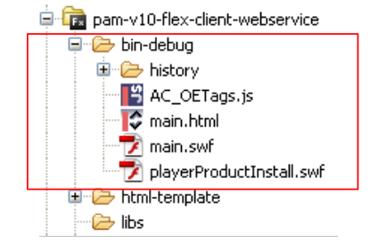
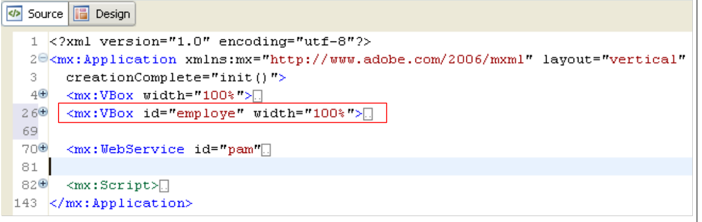
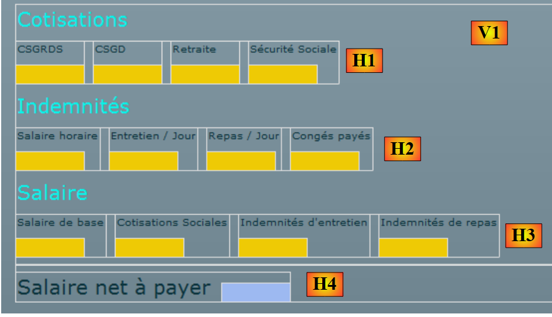

14. تطبيق [SimuPaie] – الإصدار 10 – عميل Flex لخدمة ويب ASP.NET
نقدم الآن عميل Flex لخدمة الويب ASP.NET، الإصدار 5. بيئة التطوير المتكاملة المستخدمة هي Flex Builder 3. يمكن تنزيل نسخة تجريبية من هذا المنتج من الرابط [https://www.adobe.com/cfusion/tdrc/index.cfm?loc=fr_fr&product=flex]. Flex Builder 3 هو بيئة تطوير متكاملة (IDE) قائمة على Eclipse. بالإضافة إلى ذلك، لتشغيل عميل Flex، نستخدم خادم ويب Apache من أداة Wamp [http://www.wampserver.com/]. أي خادم Apache سيفي بالغرض. يجب أن يكون متصفح الويب الذي يعرض عميل Flex مزودًا بإصدار Flash Player 9 أو أعلى.
تتميز تطبيقات Flex بأنها تعمل داخل المكون الإضافي Flash Player للمتصفح. وفي هذا الصدد، فهي تشبه تطبيقات Ajax، التي تدمج نصوص JavaScript في الصفحات المرسلة إلى المتصفح، والتي يتم تنفيذها بعد ذلك داخل المتصفح. تطبيق Flex ليس تطبيق ويب بالمعنى المعتاد: إنه تطبيق عميل للخدمات التي تقدمها خوادم الويب. في هذا الصدد، فهو مشابه لتطبيق سطح المكتب الذي سيكون عميلاً لتلك الخدمات نفسها. ومع ذلك، فإنه يختلف في جانب واحد: يتم تنزيله مبدئيًا من خادم ويب إلى متصفح مزود بمكوّن Flash Player الإضافي القادر على تشغيله.
مثل أي تطبيق سطح مكتب، يتكون تطبيق Flex أساسًا من عنصرين:
- طبقة العرض: العروض المعروضة في المتصفح. توفر هذه العروض نفس الثراء الذي توفره نوافذ تطبيقات سطح المكتب. يتم وصف العرض باستخدام لغة ترميز تسمى MXML.
- قسم كود يتعامل بشكل أساسي مع الأحداث التي تطلقها إجراءات المستخدم على العرض. يمكن كتابة هذا الكود بلغة MXML أو بلغة موجهة للكائنات تسمى ActionScript. هناك نوعان من الأحداث يجب التمييز بينهما:
- الأحداث التي تتطلب الاتصال بخادم الويب: ملء قائمة بالبيانات المقدمة من تطبيق ويب، وإرسال بيانات النموذج إلى الخادم، وما إلى ذلك. يوفر Flex عددًا من الطرق للاتصال بالخادم بطريقة شفافة للمطور. هذه الطرق غير متزامنة بشكل افتراضي: يمكن للمستخدم الاستمرار في التفاعل مع العرض أثناء تنفيذ طلب الخادم.
- الأحداث التي تعدل العرض المعروض دون تبادل البيانات مع الخادم، مثل سحب عنصر من شجرة وإفلاته في قائمة. يتم التعامل مع هذا النوع من الأحداث محليًا بالكامل داخل المتصفح.
غالبًا ما يتم تنفيذ تطبيق Flex على النحو التالي:
 |
- في [1]، يتم طلب صفحة HTML
- في [2]، يتم إرسالها. وهي تتضمن ملفًا ثنائيًا SWF (ShockWave Flash) يحتوي على تطبيق Flex بالكامل: جميع طرق العرض ورموز معالجة الأحداث الخاصة بها. سيتم تنفيذ هذا الملف بواسطة المكون الإضافي Flash Player للمتصفح.
 |
- يعمل عميل Flex محليًا في المتصفح إلا عندما يحتاج إلى بيانات خارجية. في هذه الحالة، يطلبها من الخادم [3]. ويستلمها في [4] بتنسيقات مختلفة: XML أو ثنائية. يمكن كتابة التطبيق المطلوب على خادم الويب بأي لغة. ما يهم هو تنسيق الاستجابة فقط.
لقد وصفنا بنية تنفيذ تطبيق Flex حتى يتمكن القارئ من فهم الفرق بينه وبين تطبيق الويب التقليدي، حيث لا تتضمن الصفحات كودًا (JavaScript، Flex، Silverlight، إلخ) يقوم المتصفح بتنفيذه. في الحالة الأخيرة، يكون المتصفح سلبيًا: فهو يعرض ببساطة صفحات HTML مبنية على خادم الويب الذي يرسلها إليه.
14.1. بنية تطبيق العميل/الخادم
تشبه بنية العميل/الخادم المطبقة هنا تلك الموجودة في الإصدارين 6 و 8:
 |
في [1]، تم استبدال طبقة الويب ASP.NET بطبقة ويب Flex مكتوبة بلغة MXML و ActionScript. سيتم إنشاء العميل [C] بواسطة بيئة تطوير Flex Builder. وتجدر الإشارة هنا إلى أن هذه البنية تتضمن خادمين ويب غير موضحين:
- خادم ويب ASP.NET الذي يشغل خدمة الويب [S]
- خادم ويب Apache الذي يشغل عميل الويب [1]
14.2. مشروع عميل Flex 3
نقوم ببناء عميل Flex باستخدام بيئة تطوير Flex Builder 3:
 |
- في Flex Builder 3، قم بإنشاء مشروع جديد في [1]
- نقوم بتسميته في [2] ونحدد في [3] المجلد الذي سيتم إنشاؤه فيه
 |
- في [4]، نسمي التطبيق الرئيسي (الذي سيتم تنفيذه)
- في [5]، يظهر المشروع بمجرد إنشائه
- في [6]، ملف MXML الرئيسي للتطبيق
- يحتوي ملف MXML على عرض ورمز لمعالجة أحداثه. توفر علامة التبويب [Source] [7] الوصول إلى ملف MXML. ستجد هناك علامات <mx> تصف العرض بالإضافة إلى رمز ActionScript.
- يمكن إنشاء العرض بيانيًا باستخدام علامة التبويب [Design] [8]. ثم يتم إنشاء علامات MXML التي تصف العرض تلقائيًا في علامة التبويب [Source]. والعكس صحيح أيضًا: تظهر علامات MXML المضافة مباشرةً في علامة التبويب [Source] بيانيًا في علامة التبويب [Design].
14.3. العرض رقم 1
سنقوم تدريجيًا بإنشاء واجهة ويب مشابهة لتلك الموجودة في الإصدار 1 (انظر القسم 4). أولاً، سنقوم بإنشاء الواجهة التالية:
 |
- في [1]، العرض عند نجاح الاتصال بخدمة الويب. ثم يتم ملء القائمة المنسدلة للموظفين.
- في [2]، العرض عند فشل الاتصال بخدمة الويب. ثم يتم عرض رسالة خطأ.
الملف الرئيسي للعميل [main.xml] هو كما يلي:
<?xml version="1.0" encoding="utf-8"?>
<mx:Application xmlns:mx="http://www.adobe.com/2006/mxml" layout="vertical"
creationComplete="init()">
<mx:VBox width="100%">
<mx:Label text="Feuille de salaire" fontSize="30"/>
<mx:HBox>
<mx:VBox>
<mx:Label text="Employés"/>
<mx:ComboBox id="cmbEmployes" dataProvider="{employes}" labelFunction="displayEmploye"/>
</mx:VBox>
<mx:VBox>
<mx:Label text="Heures travaillées"/>
<mx:TextInput id="txtHeuresTravaillees"/>
</mx:VBox>
<mx:VBox>
<mx:Label text="Jours travaillés"/>
<mx:NumericStepper id="joursTravailles" minimum="0" maximum="31" stepSize="1"/>
</mx:VBox>
<mx:VBox>
<mx:Label text=""/>
<mx:Button id="btnSalaire" label="Salaire"/>
</mx:VBox>
</mx:HBox>
<mx:TextArea id="msg" minWidth="400" minHeight="100" editable="false" visible="true" enabled="true" horizontalScrollPolicy="auto" verticalScrollPolicy="auto" x="0" y="0" maxHeight="100" maxWidth="400"/>
</mx:VBox>
<mx:WebService ...>
...
</mx:WebService>
<mx:Script>
<![CDATA[
...
// données
[Bindable]
private var employes : ArrayCollection;
private function init():void{
...
}
]]>
</mx:Script>
</mx:Application>
في هذا الكود، يجب التمييز بين عدة عناصر:
- تعريف التطبيق (السطران 2-3)
- وصف طريقة العرض الخاصة به (الأسطر 4–25)
- معالجات أحداث ActionScript داخل العلامة <mx:Script> (الأسطر 31-42)
- تعريف خدمة الويب البعيدة (الأسطر 27-29)
لنبدأ بالتعليق على تعريف التطبيق نفسه ووصف طريقة عرضه:
- السطران 2 و3: تعريف:
- تخطيط المكونات داخل حاوية العرض. تشير السمة layout="vertical" إلى أن المكونات سيتم ترتيبها واحدة أسفل الأخرى.
- الطريقة التي سيتم تنفيذها عند إنشاء مثيل للواجهة، أي عند إنشاء مثيل لجميع مكوناتها. تشير السمة creationComplete="init();" إلى أنه يجب تنفيذ الطريقة init في السطر 38. creationComplete هي أحد الأحداث التي يمكن لفئة Application إصدارها.
- الأسطر 4–25 تحدد مكونات العرض
- الأسطر 4-25: حاوية عمودية: سيتم وضع المكونات واحدة أسفل الأخرى
- السطر 5: يحدد مكون نصي
- الأسطر 6-23: حاوية أفقية: سيتم وضع المكونات أفقيًا داخلها.
- الأسطر 7-10: حاوية عمودية ستحتوي على نص وقائمة منسدلة
- السطر 8: النص
- السطر 9: القائمة المنسدلة التي ستُعرض فيها قائمة الموظفين. تحدد العلامة dataProvider="{employees}" مصدر البيانات الذي سيُستخدم لملء القائمة. هنا، سيتم ملء القائمة بكائن employees المُعرَّف في السطر 36. لكي يتسنى كتابة dataProvider="{employees}"، يجب أن يحتوي حقل employees على السمة [Bindable] (السطر 35). تسمح هذه السمة بالإشارة إلى متغير ActionScript خارج علامة <mx:Script>. حقل employees هو من النوع ArrayCollection، وهو نوع ActionScript يسمح لك بتخزين قوائم الكائنات، وفي هذه الحالة قائمة كائنات من النوع Employee.
- الأسطر 11-14: حاوية عمودية ستحتوي على نص وحقل إدخال
- السطر 12: النص
- السطر 13: حقل الإدخال لساعات العمل.
- الأسطر 15-18: حاوية عمودية ستحتوي على نص وعداد
- السطر 16: النص
- السطر 17: العداد لإدخال عدد أيام العمل
- الأسطر 19-22: حاوية عمودية ستحتوي على نص وزر سيؤدي إلى حساب الراتب للشخص المحدد في القائمة المنسدلة.
- السطر 20: النص
- السطر 21: الزر.
- السطر 23: نهاية الحاوية الأفقية التي بدأت في السطر 6
- السطر 24: منطقة نصية في مكون TextArea. ستعرض رسائل الخطأ.
- السطر 25: نهاية الحاوية الرأسية التي بدأت في السطر 4
تُنشئ الأسطر من 4 إلى 25 العرض التالي في علامة التبويب [التصميم]:
 |
- [1]: تم إنشاؤه بواسطة مكون Label في السطر 5
- [2]: تم إنشاؤه بواسطة مكون ComboBox في السطر 9
- [3]: تم إنشاؤه بواسطة مكون TextInput في السطر 13
- [4]: تم إنشاؤه بواسطة مكون NumericStepper في السطر 17
- [5]: تم إنشاؤه بواسطة مكون Button في السطر 21
- [6]: تم إنشاؤه بواسطة مكون TextArea في السطر 24
الآن دعونا نفحص إعلان خدمة الويب البعيدة:
<mx:WebService id="pam"
wsdl="http://localhost:1077/Service1.asmx?WSDL"
fault="wsFault(event);"
showBusyCursor="true">
<mx:operation
name="GetAllIdentitesEmployes"
result="loadEmployesCompleted(event)"
fault="loadEmployesFault(event);">
<mx:request/>
</mx:operation>
</mx:WebService>
- السطر 1: خدمة الويب هي مكون يحمل المعرف "pam" (سمة id)
- السطر 2: عنوان URI لملف WSDL الخاص بخدمة الويب (انظر القسم 9.2)
- السطر 3: الطريقة التي يجب تنفيذها في حالة حدوث خطأ أثناء الاتصال بخدمة الويب: طريقة wsFault.
- السطر 4: يطلب عرض مؤشر لإعلام المستخدم بأن عملية التبادل مع خدمة الويب جارية.
- الأسطر 5-10: إحدى العمليات التي توفرها خدمة الويب البعيدة. هنا، طريقة GetAllIdentitesEmployes.
- السطر 7: الطريقة التي يجب تنفيذها عند اكتمال استدعاء هذه الطريقة بنجاح، أي عندما تعرض خدمة الويب قائمة الموظفين بنجاح
- السطر 8: الطريقة التي يجب تنفيذها عندما ينتهي استدعاء هذه الطريقة بخطأ.
- السطر 9: المعلمات الخاصة بعملية GetAllEmployeeIDs. نعلم أن هذه الطريقة لا تتوقع أي معلمات. لذلك، نترك العلامة <mx:request> فارغة.
دعونا الآن نفحص كود ActionScript المرتبط بخدمة الويب:
<mx:Script>
<![CDATA[
import mx.rpc.events.FaultEvent;
import mx.collections.ArrayCollection;
import mx.rpc.events.ResultEvent;
// données
[Bindable]
private var employes : ArrayCollection;
private function init():void{
// on note les coordonnées de la zone de message
msgHeight=msg.height;
msgWidth=msg.width;
// on cache la zone de message
hideMsg();
// requête au service web distant pour avoir la liste simplifiée des employés
pam.GetAllIdentitesEmployes.send();
}
private function wsFault(event:Event):void{
// on signale l'erreur
msg.text="Service distant indisponible";
showMsg();
}
private function loadEmployesCompleted(event:ResultEvent):void{
// remplissage combo des employés
employes=event.result as ArrayCollection;
}
private function displayEmploye(employe:Object):String{
// identité d'un employé
return employe.Prenom + " " + employe.Nom;
}
private function loadEmployesFault(event:FaultEvent):void{
// affichage msg d'erreur
msg.text=event.fault.message;
// formulaire
showMsg();
}
// gestion des blocs
private var msgWidth:int;
private var msgHeight:int;
private function hideMsg():void{
msg.height=0;
msg.width=0;
}
private function showMsg():void{
msg.height=msgHeight;
msg.width=msgWidth;
}
]]>
</mx:Script>
- السطر 11: يتم تنفيذ طريقة init عند بدء تشغيل التطبيق لأننا كتبنا:
<mx:Application xmlns:mx="http://www.adobe.com/2006/mxml" layout="vertical"
creationComplete="init()">
- السطران 13-14: نقوم بتخزين ارتفاع وعرض منطقة الرسالة. نستخدم طريقتين، hideMsg (السطور 48-51) و showMsg (السطور 53-56)، لإخفاء أو إظهار منطقة الرسالة، على التوالي، اعتمادًا على حدوث خطأ أم لا. تخفي طريقة hideMsg منطقة الرسالة عن طريق تعيين ارتفاعها وعرضها إلى 0. تعرض طريقة showMsg منطقة الرسالة عن طريق استعادة الارتفاع والعرض المخزنين في طريقة init.
- السطر 16: منطقة الرسائل مخفية. في البداية، لا يوجد خطأ.
- السطر 18: يتم استدعاء طريقة GetAllIdentitesEmploye (السطر 6 من خدمة الويب) لخدمة الويب pam (السطر 1 من خدمة الويب). الاستدعاء غير متزامن. يشير السطر 7 من خدمة الويب إلى أنه سيتم تنفيذ طريقة loadEmployesCompleted إذا اكتمل هذا الاستدعاء غير المتزامن بنجاح. يشير السطر 8 من خدمة الويب إلى أنه سيتم تنفيذ طريقة loadEmployesFault إذا فشل هذا الاستدعاء غير المتزامن.
- السطر 27: طريقة loadEmployesCompleted، التي يتم تنفيذها إذا اكتمل استدعاء خدمة الويب في السطر 18 بنجاح.
- السطر 29: نعلم أن خدمة الويب تُرجع استجابة XML. من المفيد الرجوع إلى هذا لفهم كود ActionScript:
 |
- في [1]، صفحة خدمة الويب [Service.asmx]
- في [2]، الرابط إلى صفحة الاختبار الخاصة بالطريقة [GetAllIdentitesEmployes]
- في [3]، يتم إجراء الاختبار. لا يُتوقع وجود أي معلمات.
- في [4]: تحتوي استجابة XML على مصفوفة من الموظفين. لكل موظف، هناك خمسة عناصر من المعلومات محاطة بعلامات <Id> و<Version> و<SS> و<LastName> و<FirstName>. إذا تم تخزين استجابة XML في مصفوفة `employees` من النوع `ArrayCollection`:
- employees.getItemAt(i): هو العنصر i من المصفوفة
- employees.getItemAt(i).SS: هو رقم الضمان الاجتماعي لهذا الموظف.
- employees.getItemAt(i).LastName: هو اسم العائلة لهذا الموظف
- ...
لنعد إلى كود ActionScript:
- السطر 29: event.result يمثل استجابة XML من خدمة الويب. تعرض طريقة GetAllIdentitesEmployes مصفوفة من الموظفين. ويمثل event.result هذه المصفوفة من الموظفين. ويتم تخزينها في متغير من نوع ArrayCollection، وهو نوع يمثل عمومًا مجموعة من الكائنات. ويتم تعريف هذا المتغير، المسمى employees، في السطر 9. تذكر أن هذا المتغير هو مصدر البيانات لمربع القائمة المنسدلة employees:
<mx:ComboBox id="cmbEmployes" dataProvider="{employes}" labelFunction="displayEmploye"/>
بالنسبة لكل موظف في مصدر البيانات الخاص به، سيستدعي مربع القائمة المنسدلة طريقة displayEmploye (سمة labelFunction) لعرض الموظف. توضح الأسطر 32-34 أن هذه الطريقة تعرض الاسم الأول واسم العائلة للموظف.
- السطر 37: طريقة loadEmployesFault، التي يتم تنفيذها في حالة فشل استدعاء خدمة الويب في السطر 18. event.fault.message هي رسالة الخطأ التي ترجعها خدمة الويب.
- السطر 39: يتم وضع رسالة الخطأ هذه في مربع الرسائل
- السطر 41: يتم عرض مربع الرسالة.
بمجرد إنشاء التطبيق، يوجد الكود القابل للتنفيذ في مجلد [bin-debug] الخاص بمشروع Flex:
 |
أعلاه،
- يمثل ملف [main.html] ملف HTML الذي سيطلبه المتصفح من خادم الويب للحصول على عميل Flex
- الملف [main.swf] هو الملف الثنائي لعميل Flex الذي سيتم تضمينه في صفحة HTML المرسلة إلى المتصفح ثم تنفيذه بواسطة المكون الإضافي Flash Player للمتصفح.
نحن جاهزون لتشغيل عميل Flex. أولاً، نحتاج إلى إعداد بيئة التشغيل التي يتطلبها. لنعد إلى بنية العميل/الخادم التي اختبرناها:
 |
من جانب الخادم:
- بدء خدمة الويب ASP.NET [S]
جانب العميل:
- ابدأ تشغيل خادم Apache الذي سيقدم تطبيق Flex.
نستخدم هنا أداة Wamp. باستخدام هذه الأداة، يمكننا تعيين اسم مستعار لمجلد [bin-debug] في مشروع Flex.
 |
- يوجد رمز Wamp في أسفل الشاشة [1]
- انقر بزر الماوس الأيسر على أيقونة Wamp، واختر خيار Apache [2] / Alias Directories [3، 4]
- اختر الخيار [5]: إضافة اسم مستعار
 |
- في [6]، قم بتعيين اسم مستعار (أي اسم) لتطبيق الويب الذي سيتم تنفيذه
- في [7]، حدد جذر تطبيق الويب الذي سيستخدم هذا الاسم المستعار: وهو مجلد [bin-debug] لمشروع Flex الذي أنشأناه للتو.
دعونا نستعرض بنية مجلد [bin-debug] في مشروع Flex:
 |
ملف [main.html] هو ملف HTML لتطبيق Flex. بفضل الاسم المستعار الذي أنشأناه للتو لمجلد [bin-debug]، سيكون هذا الملف متاحًا عبر عنوان URL [http://localhost/pam-v10-flex-client-webservice/main.html]. يمكننا الوصول إلى عنوان URL هذا في متصفح مزود بمكوّن Flash Player الإضافي الإصدار 9 أو أعلى:
 |
- في [1]، عنوان URL لتطبيق Flex
- في [2]، القائمة المنسدلة للموظفين عندما يعمل كل شيء بشكل صحيح
- في [3]، النتيجة عند إيقاف خدمة الويب
قد تكون مهتمًا بمشاهدة شفرة المصدر لصفحة HTML المستلمة:
- يبدأ نص الصفحة في السطر 25. ولا يحتوي على HTML قياسي بل كائن (السطر 28) من النوع "application/x-shockwave-flash" (السطر 41). هذا هو ملف [main.swf] (السطر 31) الموجود في مجلد [bin-debug] لمشروع Flex. وهو ملف كبير الحجم: حوالي 600 كيلوبايت لهذا المثال البسيط.
14.4. العرض رقم 2
سنضيف حاوية VBox جديدة إلى العرض الحالي:
 |
 |
- في [4،5]، قمنا بتعيين [main2.mxml] باعتباره التطبيق الافتراضي الجديد. وهذا هو التطبيق الذي سيتم تجميعه الآن.
- في [6]، يُشار إلى التطبيق الافتراضي بنقطة زرقاء.
سيعرض الحاوية [1] معلومات حول الموظف المحدد في مربع القائمة المنسدلة [2]. نقوم بنسخ [main.xml] كملف [main2.xml] [3] لإنشاء العرض الجديد. سنعمل الآن مع [main2.xml].
 |
التغيير الذي تم إجراؤه على المشروع السابق هو إضافة الحاوية في السطر 26 أعلاه، والتي تحتوي على كود MXML لحاوية العرض [1]. نمنحها المعرف employe حتى نتمكن من التعامل معها عبر الكود. يجب أن يكون من الممكن إخفاء هذه الحاوية أو إظهارها باستخدام نفس التقنية المستخدمة سابقًا لمنطقة الرسائل.
لنعد إلى التخطيط المرئي للعرض:
 |
دعونا نحدد الحاويات المختلفة للمعلومات المعروضة الجديدة:
- V1: حاوية عمودية لجميع المكونات: التسمية "الموظف [1]" والحاويات الأفقية [H1] و[H2]
- H1: حاوية أفقية لمعلومات الاسم الأخير والاسم الأول والعنوان
- V2: حاوية عمودية لتسمية "اللقب" وعرض لقب الموظف.
- H2: حاوية أفقية لمعلومات المدينة والرمز البريدي والمؤشر
فيما يلي الكود الكامل للحاوية "employe":
<mx:VBox id="employe" width="100%">
<mx:Label text="Employé" fontSize="20" color="#09F3EB"/>
<mx:HBox>
<mx:VBox >
<mx:Label text="Nom"/>
<mx:VBox backgroundColor="#EECA05">
<mx:Text id="lblNom" minWidth="100" minHeight="20" fontFamily="Verdana" textAlign="center"/>
</mx:VBox>
</mx:VBox>
<mx:VBox >
<mx:Label text="Prénom"/>
<mx:VBox backgroundColor="#EECA05">
<mx:Text id="lblPreNom" minWidth="100" minHeight="20" fontFamily="Verdana" textAlign="center"/>
</mx:VBox>
</mx:VBox>
<mx:VBox >
<mx:Label text="Adresse"/>
<mx:VBox backgroundColor="#EECA05">
<mx:Text id="lblAdresse" minWidth="250" minHeight="20" fontFamily="Verdana" textAlign="center"/>
</mx:VBox>
</mx:VBox>
</mx:HBox>
<mx:HBox>
<mx:VBox >
<mx:Label text="Ville"/>
<mx:VBox backgroundColor="#EECA05">
<mx:Text id="lblVille" minWidth="100" minHeight="20" fontFamily="Verdana" textAlign="center"/>
</mx:VBox>
</mx:VBox>
<mx:VBox >
<mx:Label text="Code Postal"/>
<mx:VBox backgroundColor="#EECA05">
<mx:Text id="lblCodePostal" minWidth="70" minHeight="20" fontFamily="Verdana" textAlign="center"/>
</mx:VBox>
</mx:VBox>
<mx:VBox >
<mx:Label text="Indice"/>
<mx:VBox backgroundColor="#EECA05">
<mx:Text id="lblIndice" minWidth="20" minHeight="20" fontFamily="Verdana" textAlign="center"/>
</mx:VBox>
</mx:VBox>
</mx:HBox>
</mx:VBox>
الرمز واضح بذاته. دعونا نشرح بإيجاز الحاوية الرأسية التي تعرض اسم الموظف، على سبيل المثال:
- الأسطر 4–9: الحاوية الرأسية
- السطر 5: تسمية "Name"
- الأسطر 6-8: حاوية عمودية ستعرض اسم الموظف (السطر 7). نريد إعطاء الحقول التي تعرض معلومات الموظف لون خلفية مختلف. لا يوفر مكون النص هذا الخيار (أو ربما لم أبحث جيدًا). يمكنك تعيين لون خلفية الحاوية. ولهذا السبب تم استخدامه هنا.
- السطر 7: مكون النص الذي سيعرض اسم الموظف. قمنا بتعيين الحد الأدنى للارتفاع والعرض له.
سنستخدم الحاوية "employee" لعرض معلومات الموظف التي يختارها المستخدم من القائمة المنسدلة للموظفين، بشكل مستقل عن الزر [Salary]، الذي سيُستخدم لاحقًا لحساب الراتب بمجرد إدخال جميع المعلومات الضرورية.
لمعالجة التغيير الذي طرأ على التحديد في مربع القائمة المنسدلة "الموظفون"، يتغير كود MXML الخاص به على النحو التالي:
<mx:ComboBox id="cmbEmployes" dataProvider="{employes}" labelFunction="displayEmploye" change="displayInfosEmploye();"/>
يتم تشغيل حدث التغيير بواسطة مربع القائمة المنسدلة عندما يغير المستخدم اختياره. وسيكون معالج هذا الحدث هو الأسلوب displayInfosEmploye.
دعونا نستعرض الطرق التي تعرضها خدمة الويب البعيدة:
// liste de toutes les identités des employés
public Employe[] GetAllIdentitesEmployes();
// ------- le calcul du salaire
public FeuilleSalaire GetSalaire(string ss, double heuresTravaillees, int joursTravailles);
هنا، نريد عرض المعلومات (اللقب، الاسم الأول، إلخ) الخاصة بالموظف المحدد في القائمة المنسدلة. لا توفر خدمة الويب طريقة لاسترداد هذه المعلومات. ومع ذلك، يمكننا استخدام طريقة GetSalary عن طريق تمرير رقم الضمان الاجتماعي للموظف المحدد و 0 لساعات وأيام العمل. سيتم إجراء حساب راتب زائد عن الحاجة، لكن طريقة GetSalary ستُرجع كائن PayStub يحتوي على المعلومات التي نحتاجها.
تم تعديل إعلان خدمة الويب الحالية لتضمين تعريف طريقة GetSalaire:
<mx:WebService id="pam"
wsdl="http://localhost:1077/Service1.asmx?WSDL"
fault="wsFault(event);"
showBusyCursor="true">
<mx:operation
name="GetAllIdentitesEmployes"
result="loadEmployesCompleted(event)"
fault="loadEmployesFault(event);">
<mx:request/>
</mx:operation>
<mx:operation name="GetSalaire"
result="getSalaireCompleted(event)"
fault="getSalaireFault(event);">
<mx:request>
<ss>{employes.getItemAt(cmbEmployes.selectedIndex).SS}</ss>
<heuresTravaillees>{heuresTravaillees}</heuresTravaillees>
<joursTravailles>{joursDeTravail}</joursTravailles>
</mx:request>
</mx:operation>
</mx:WebService>
- الأسطر 11-19: تعريف طريقة GetSalary لخدمة الويب
- السطر 12: يحدد الطريقة التي سيتم تنفيذها عند نجاح استدعاء طريقة GetSalaire
- السطر 13: يحدد الطريقة التي سيتم تنفيذها عند فشل استدعاء طريقة GetSalaire
- الأسطر 14-18: تتوقع طريقة GetSalaire ثلاثة معلمات. يتم تعريفها داخل علامة <mx:request> بالشكل <param1>value1</param1>. لا يمكن أن يكون المعرف param1 عشوائياً. يجب عليك استخدام الأسماء التي تتوقعها خدمة الويب:
 |
- في [1]، صفحة خدمة الويب [http://localhost:1077/Service1.asmx]
- في [2]، الرابط إلى صفحة اختبار الطريقة [GetSalaire]
- في [3]، المعلمات المتوقعة من قبل الطريقة. هذه هي الأسماء التي يجب استخدامها كعلامات فرعية لعلامة <mx:request>.
لنعد إلى إعلان خدمة الويب:
<mx:operation name="GetSalaire"
result="getSalaireCompleted(event)"
fault="getSalaireFault(event);">
<mx:request>
<ss>{employes.getItemAt(cmbEmployes.selectedIndex).SS}</ss>
<heuresTravaillees>{heuresTravaillees}</heuresTravaillees>
<joursTravailles>{joursDeTravail}</joursTravailles>
</mx:request>
</mx:operation>
- السطر 5: المعلمة ss. تذكر أنه عند بدء تشغيل تطبيق Flex، تم تخزين مصفوفة جميع الموظفين في متغير باسم employees من النوع ArrayCollection.
- employees.getItemAt(i): هو الموظف رقم i في المصفوفة
- employees.getItemAt(i).SS: هو رقم الضمان الاجتماعي لهذا الموظف.
- cmbEmployees.selectedIndex: هو مؤشر العنصر المحدد في مربع القائمة المنسدلة employees cmbEmployees.
في الكود أعلاه، كيف نعرف أن SS هو رقم الضمان الاجتماعي للموظف؟ للإجابة على هذا السؤال، نحتاج إلى الرجوع إلى الاستجابة المرسلة بواسطة طريقة GetAllIdentitesEmployes:
 |
- في [1]، صفحة خدمة الويب [Service.asmx]
- في [2]، الرابط إلى صفحة الاختبار الخاصة بالطريقة [GetAllIdentitesEmployes]
- في [3]، يتم إجراء الاختبار. لا يُتوقع وجود أي معلمات.
- في [4]: تحتوي استجابة XML على مصفوفة من الموظفين. يتم تخزين هذه المصفوفة في المتغير `employees`. كما هو موضح في [5]، فإن `SS` هي بالفعل العلامة المستخدمة لتخزين رقم الضمان الاجتماعي.
لنختتم فحصنا لخدمة الويب:
<mx:operation name="GetSalaire"
result="getSalaireCompleted(event)"
fault="getSalaireFault(event);">
<mx:request>
<ss>{employes.getItemAt(cmbEmployes.selectedIndex).SS}</ss>
<heuresTravaillees>{heuresTravaillees}</heuresTravaillees>
<joursTravailles>{joursDeTravail}</joursTravailles>
</mx:request>
</mx:operation>
- السطر 6: سيتم توفير عدد ساعات العمل بواسطة متغير hoursWorked
- السطر 6: سيتم توفير عدد أيام العمل بواسطة متغير daysWorked
يجب إعلان هذه المتغيرات داخل علامة <mx:Script> باستخدام السمة [Bindable]، مما يسمح لمكونات MXML بالرجوع إليها (الأسطر 7–10 أدناه).
<mx:Script>
<![CDATA[
...
// données
[Bindable]
private var employes : ArrayCollection;
[Bindable]
private var heuresTravaillees:Number;
[Bindable]
private var joursDeTravail:int;
...
</mx:Script>
يتغير كود معالجة الأحداث في العرض على النحو التالي:
<mx:Script>
<![CDATA[
import mx.rpc.events.FaultEvent;
import mx.collections.ArrayCollection;
import mx.rpc.events.ResultEvent;
// données
[Bindable]
private var employes : ArrayCollection;
[Bindable]
private var heuresTravaillees:Number;
[Bindable]
private var joursDeTravail:int;
private function init():void{
// on note les hauteur / largeur de # blocs
employeHeight=employe.height;
employeWidth=employe.width;
// on cache certains éléments
hideEmploye();
...
}
private function displayInfosEmploye():void{
// formulaire
hideEmploye();
// on calcule un salaire fictif
heuresTravaillees=0;
joursDeTravail=0;
pam.GetSalaire.send();
}
private function getSalaireCompleted(event:ResultEvent):void{
...
}
private function getSalaireFault(event:FaultEvent):void{
...
}
// vues partielles -------------------------------------------------
private var employeHeight:int;
private var employeWidth:int;
private function hideEmploye():void{
employe.height=0;
employe.width=0;
}
private function showEmploye():void{
employe.height=employeHeight;
employe.width=employeWidth;
}
]]>
</mx:Script>
- السطر 15: طريقة init، التي يتم تنفيذها عند بدء تشغيل تطبيق Flex، تخزن ارتفاع وعرض الحاوية الرأسية للموظفين بحيث يمكن استعادتها (الأسطر 50–53) بعد إخفائها (الأسطر 45–48).
- السطر 24: يتم تنفيذ طريقة displayInfosEmploye عندما يغير المستخدم اختياره في مربع القائمة المنسدلة employee.
- السطر 26: يتم إخفاء حاوية الموظفين إذا كانت مرئية سابقًا
- السطر 30: يتم استدعاء طريقة GetSalary الخاصة بخدمة الويب بشكل غير متزامن. ونعلم أنها تتوقع ثلاثة معلمات:
<ss>{employes.getItemAt(cmbEmployes.selectedIndex).SS}</ss>
<heuresTravaillees>{heuresTravaillees}</heuresTravaillees>
<joursTravailles>{joursDeTravail}</joursTravailles>
- السطر 1: ستكون المعلمة ss هي رقم الضمان الاجتماعي للموظف المحدد في مربع القائمة المنسدلة للموظفين
- السطر 2: تقوم طريقة displayInfosEmploye بتعيين القيمة 0 للمتغير hoursWorked (السطر 28)
- السطر 3: تعين طريقة displayInfosEmploye القيمة 0 للمتغير daysWorked (السطر 29)
يتم تنفيذ طريقة GetSalaireCompleted إذا اكتملت طريقة GetSalaire الخاصة بخدمة الويب بنجاح:
private function getSalaireCompleted(event:ResultEvent):void{
// hide error msg
hideMsg();
// you receive a payslip
var feuilleSalaire:Object=event.result;
// display
lblNom.text=feuilleSalaire.Employe.Nom;
lblPreNom.text=feuilleSalaire.Employe.Prenom;
lblAdresse.text=feuilleSalaire.Employe.Adresse;
lblVille.text=feuilleSalaire.Employe.Ville;
lblCodePostal.text=feuilleSalaire.Employe.CodePostal;
lblIndice.text=feuilleSalaire.Employe.Indice;
showEmploye();
}
- السطر 3: نخفي مربع الرسالة في حالة ظهوره.
- السطر 5: نسترد كشف الراتب الذي أعادته طريقة GetSalary
لمعرفة ما تعيده طريقة GetSalaire بالضبط، نعود إلى صفحة خدمة الويب:
 |
- [1] هي صفحة خدمة الويب [Service.asmx]
- في [2]، الرابط المؤدي إلى صفحة الاختبار لطريقة [GetSalaire]
- في [3]، نقدم المعلمات
- في [4]، XML الناتج.
لنعد إلى طريقة getSalaireCompleted:
private function getSalaireCompleted(event:ResultEvent):void{
// hide error msg
hideMsg();
// you receive a payslip
var feuilleSalaire:Object=event.result;
// display
lblNom.text=feuilleSalaire.Employe.Nom;
lblPreNom.text=feuilleSalaire.Employe.Prenom;
lblAdresse.text=feuilleSalaire.Employe.Adresse;
lblVille.text=feuilleSalaire.Employe.Ville;
lblCodePostal.text=feuilleSalaire.Employe.CodePostal;
lblIndice.text=feuilleSalaire.Employe.Indemnites.Indice;
showEmploye();
}
- السطر 5: PayrollSheet = event.result يمثل موجز XML [4] الذي تم إرجاعه بواسطة طريقة GetSalary. من هذا الموجز، يمكننا أن نرى أن:
- payrollSheet.Employee هو دفق XML الخاص بموظف
- sheetSalary.Employee.Name هو اسم هذا الموظف
- ...
- الأسطر 7–12: يتم استخدام موجز XML Payroll.Employee لملء الحقول المختلفة لحاوية الموظف.
- السطر 13: يتم عرض حاوية الموظف.
يتم تنفيذ طريقة getSalaireFault في حالة فشل طريقة GetSalaire الخاصة بخدمة الويب:
private function getSalaireFault(event:FaultEvent):void{
// error msg display
msg.text=event.fault.message;
// form
showMsg();
}
- السطر 3: يتم وضع رسالة الخطأ event.fault.message في مربع الرسالة
- السطر 5: يتم عرض مربع الرسالة
وبهذا تنتهي التغييرات المطلوبة لهذه النسخة الجديدة. عند حفظها، وإذا كانت الصيغة صحيحة، يتم إنشاء النسخة القابلة للتنفيذ في مجلد [bin-debug] الخاص بالمشروع:
 |
أعلاه، [main2.html] هي صفحة HTML التي تضم ملف تطبيق Flex الثنائي [main2.swf]، والذي سيتم تنفيذه بواسطة Flash Player.
يمكننا اختبار هذا الإصدار الجديد:
- يجب أن تكون خدمة الويب ASP.NET قيد التشغيل
- يجب أن يكون خادم Apache قيد التشغيل لعميل Flex
بافتراض أن الاسم المستعار [pam-v10-flex-client-webservice] المستخدم في الإصدار السابق لا يزال موجودًا، نطلب عنوان URL [http://localhost/pam-v10-flex-client-webservice/main2.html] من خادم Apache في متصفح:
 |
 |
- في [1]، عنوان URL المطلوب
- في [2]، القائمة المنسدلة للموظفين
- في [3]، قم بتغيير الاختيار في القائمة المنسدلة لتشغيل حدث التغيير
- في [4]، النتيجة التي تم الحصول عليها: ملف تعريف جوستين لافيرتي.
14.5. الطريقة #3
تتولى العرض 3 التحقق من صحة النموذج. هنا، يتم التحقق فقط من حقل الإدخال "txtHeuresTravaillees". طالما أن النموذج غير صالح، سيظل الزر "btnSalaire" معطلاً.
لإضافة هذه الوظيفة، نقوم بنسخ ملف [main2.mxml] إلى ملف [main3.mxml]:
 |
من الآن فصاعدًا، سنعمل مع [main3.mxml]، الذي سنقوم بتعيينه كتطبيق افتراضي (انظر هذا المفهوم في القسم 14.4). أولاً، نضيف سمة إلى مكون "txtHeuresTravaillees":
<mx:TextInput id="txtHeuresTravaillees" change="validateForm(event)"/>
في كل مرة يتغير فيها محتوى حقل الإدخال "txtHeuresTravaillees"، يتم استدعاء طريقة validateForm. هذه طريقة محلية كتبها المطور. فيها، يمكننا التحقق من أن محتوى حقل الإدخال "txtHeuresTravaillees" هو بالفعل عدد صحيح موجب. سنقوم بإجراء مختلف باستخدام مكون التحقق من الصحة:
<mx:NumberValidator id="heuresTravailleesValidator" source="{txtHeuresTravaillees}" property="text"
precision="2" allowNegative="false"
invalidCharError="Caractères invalides"
precisionError="Deux chiffres au plus après la virgule"
negativeError="Le nombre d'heures doit être positif ou nul"
invalidFormatCharsError="Format invalide"
required="true"
requiredFieldError="Donnée requise"/>
- السطر 1: يتحقق المكون <mx:NumberValidator> من أن مكونًا آخر يحتوي على عدد صحيح أو عدد حقيقي.
- السطر 1: تُعيّن السمة id معرّفًا للمكون.
- السطر 1: source هو معرف المكون الذي يتم التحقق من صحته بواسطة مكون NumberValidator. هنا، يتم التحقق من صحة حقل الإدخال "txtHeuresTravaillees".
- السطر 1: property هو اسم خاصية المكون المصدر التي تحتوي على القيمة المراد التحقق من صحتها. في النهاية، يتم التحقق من صحة القيمة source.property، وهي في هذه الحالة txtHeuresTravaillees.text.
- السطر 2: تحدد الدقة (precision) الحد الأقصى لعدد الخانات العشرية المسموح بها. تعني الدقة 0 (precision=0) أن الرقم المدخل يجب أن يكون عددًا صحيحًا.
- السطر 2: تحدد allowNegative ما إذا كان الأرقام السالبة مسموحة أم لا
- السطر 7: يحدد required ما إذا كان الإدخال إلزاميًا أم لا.
عندما لا يتم استيفاء شرط التحقق من الصحة، يتم عرض رسالة خطأ في تلميح أداة بالقرب من المكون غير الصالح. بشكل افتراضي، تكون هذه الرسائل باللغة الإنجليزية. يمكنك تعريف هذه الرسائل بنفسك:
- (تابع)
- invalidCharError: رسالة الخطأ عندما يحتوي النص على حرف لا يمكن أن يظهر في رقم
- precisionError: رسالة الخطأ عندما يكون عدد الخانات العشرية غير صحيح بالنسبة لخاصية الدقة
- negativeError: رسالة الخطأ عندما يكون الرقم سالبًا ولكن السمة allowNegative="false" محددة
- requiredFieldError: رسالة الخطأ عندما لا يتم إدخال أي قيمة على الرغم من تعيين السمة requiredField="true"
- invalidFormatCharsError: رسالة الخطأ التي تظهر عندما يحتوي النص على أحرف غير صالحة أو بتنسيق غير صحيح؟
لنعد إلى المكون "txtHeuresTravaillees":
<mx:TextInput id="txtHeuresTravaillees" change="validateForm(event)"/>
يمكن أن تكون طريقة validateForm كما يلي داخل علامة <mx:Script>:
private function validateForm(event:Event):void
{
// validate hours worked
var evt:ValidationResultEvent = heuresTravailleesValidator.validate();
// successful validation?
btnSalaire.enabled=evt.type==ValidationResultEvent.VALID;
}
- السطر 4: يتم تنفيذ أداة التحقق "heuresTravailleesValidator". وتُرجع نتيجة من النوع ValidationResultEvent.
- السطر 6: evt.type من النوع String ويشير إلى نوع الحدث. evt.type له قيمتان محتملتان لنوع ValidationResultEvent: "invalid" أو "valid"، ممثلتان بالثوابت ValidationResultEvent.INVALID و ValidationResultEvent.VALID. إذا نجحت عملية التحقق من الصحة في السطر 4، يجب أن يكون لـ evt.type القيمة ValidationResultEvent.VALID. في هذه الحالة، يتم تمكين الزر btnSalaire؛ وإلا، يتم تعطيله.
وهذا يكفي لاختبار صحة ساعات العمل.
 |
فيما سبق، أسفر تجميع المشروع عن إنشاء الملفين [main3.html] و[main3.swf]. ندخل عنوان URL [http://localhost/pam-v10-flex-client-webservice/main3.html] في متصفح ونتحقق من حالات الخطأ المختلفة:
 |
 |
- يظهر الحقل غير الصحيح بإطار أحمر [1، 2، 3]، بينما يظهر الحقل الصحيح بإطار أزرق [4].
- في [4]، لاحظ أن زر [الراتب] نشط لأن عدد ساعات العمل صحيح.
14.6. الطريقة الرابعة
تستكمل العرض 4 نموذج حساب الراتب. للقيام بذلك، نقوم بنسخ [main3.xml] إلى [main4.xml] ونعمل الآن مع main4، الذي قمنا بتعيينه كتطبيق افتراضي (انظر القسم 14.4).
 |
التغييرات التي تم إجراؤها في [main4.xml] [1] هي كما يلي:
- تمت إضافة حاوية عمودية جديدة إلى العرض [2] لعرض مكونات راتب الموظف
- تمت إضافة مكون لتنسيق القيم النقدية [3]
- يتم التعامل مع عرض مكونات الراتب بواسطة المعالج المرتبط بحدث "النقر" الخاص بالزر "btnSalaire".
يتطور العرض على النحو التالي:
 |
تتبع الحاوية الجديدة نفس مبدأ الحاوية السابقة. وهي عبارة عن حاوية VBox رأسية [V1] تحتوي على أربع حاويات HBox أفقية [Hi]. وتتألف الحاويات الأفقية من H1 إلى H3 من حاويات رأسية تحتوي على تسميتين، تقع الثانية منها داخل حاوية رأسية لتوفير لون الخلفية.
السؤال 1: اكتب حاوية الراتب. سيُشار إليها فيما بعد باسم complements.
السؤال 2: اكتب الطرق لإخفاء/إظهار حاوية المكملات. استلهم من ما تم عمله سابقًا لحاوية الموظف.
نربط معالجًا بحدث "click" الخاص بالزر "btnSalaire":
<mx:Button id="btnSalaire" label="Salaire" click="calculerSalaire()"/>
طريقة *calculerSalaire* هي كما يلي:
private function calculerSalaire():void{
// form preparation
affichageSalaire=true;
msg.text="";
// salary calculation parameters
heuresTravaillees=Number(txtHeuresTravaillees.text);
joursDeTravail=int(joursTravailles.value);
// the salary is requested from the web service
pam.GetSalaire.send();
}
- السطر 3: تُستخدم المتغير المنطقي displaySalary للإشارة إلى ما إذا كان سيتم عرض حاوية المكملات، التي تعرض تفاصيل الراتب، أم لا. يتم تنفيذ الأسلوب getSalaryCompleted في حالتين:
- عند تغيير الموظف في القائمة المنسدلة للموظفين لعرض معلوماته بدون الراتب. في هذه الحالة، يتم تعيين salaryDisplay=false.
- حساب الراتب
- السطر 6: يتم تحويل النص الموجود في حقل الإدخال txtHeuresTravaillees إلى عدد حقيقي.
- السطر 7: يتم تحويل قيمة عداد daysWorked إلى عدد صحيح.
- السطر 9: يتم استدعاء طريقة GetSalary عن بُعد. لاحظ أن هذه الطريقة تتوقع ثلاثة معلمات، بما في ذلك معلمتا hoursWorked و daysWorked اللتان تم تهيئتهما في السطرين 6 و 7. لاحظ أيضًا أنه في حالة نجاح الاستدعاء غير المتزامن لطريقة GetSalary:
- نجح، فسيتم استدعاء الأسلوب getSalaireCompleted
- فشل، سيتم استدعاء الأسلوب getSalaireFault
السؤال 3: أكمل الطريقة الحالية getSalaireCompleted بحيث تعرض راتب الموظف في حالة النقر على زر btnSalaire.
حاليًا، يتم عرض بنود الراتب بدون رمز اليورو. يمكنك تضمينه في الكود أو استخدام أداة تنسيق. هذه هي الطريقة التي نتبعها حاليًا. ستكون أداة التنسيق كما يلي:
<mx:CurrencyFormatter id="eurosFormatter" precision="2"
currencySymbol="€" useNegativeSign="true"
alignSymbol="right"/>
- السطر 1: id هو معرف أداة التنسيق، وprecision هو عدد المنازل العشرية المطلوب الاحتفاظ بها.
- السطر 2: currencySymbol هو رمز العملة المراد استخدامه. useNegativeSign يشير إلى ما إذا كان سيتم استخدام علامة الطرح للقيم السالبة أم لا.
- السطر 3: يحدد alignSymbol مكان وضع رمز العملة بالنسبة للرقم.
يُستخدم مُنسق النص هذا في كود البرنامج النصي على النحو التالي:
- eurosFormatter هو معرف أداة التنسيق المطلوب استخدامها
- format هي الطريقة التي يتم استدعاؤها لتنسيق رقم. وهي تُرجع سلسلة نصية.
- feuilleSalaire.Indemnites.BaseHeure هو الرقم المراد تنسيقه.
- lblSH هو اسم مكون نصي.
السؤال 4: قم بتعديل الطريقة getSalaireCompleted بحيث تستخدم أداة تنسيق العملة.